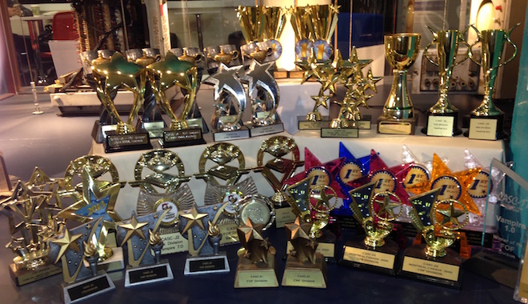

|  | ||
|
||
Vampire has won at least one division of the world cup in theorem proving CASC since 1999. All together Vampire won 45 titles: more than any other prover. We take part in the following divisions of the competition:
Here is the list of our achievements:
| Year | FOF | CNF/MIX | LTB | EPR | FNT | TFA | SLH | |
|---|---|---|---|---|---|---|---|---|
| 1999 | winner | - | ||||||
| 2000 | winner | - | ||||||
| 2001 | winner | - | ||||||
| 2002 | winner | winner | - | |||||
| 2003 | winner | winner | - | |||||
| 2004 | winner* | winner | - | |||||
| 2005 | winner | winner* | - | |||||
| 2006 | winner | winner* | - | |||||
| 2007 | winner | winner* | - | |||||
| 2008 | winner | winner* | - | |||||
| 2009 | winner | winner* | winner | |||||
| 2010 | winner | winner* | winner | |||||
| 2011 | winner* | - | winner* | |||||
| 2012 (IJCAR) | winner* | - | winner | |||||
| 2012 (Turing) | winner* | - | winner | |||||
| 2013 | winner* | - | ||||||
| 2014 | winner | - | - | |||||
| 2015 | winner | - | winner | winner | winner | winner | ||
| 2016 | winner | - | winner | winner | winner | |||
| 2017 | winner | - | winner | winner | winner | winner | ||
| 2018 | winner | - | winner | winner | - | |||
| 2019 | winner | - | winner | winner | winner |
Note: winner* means that Vampire solved more problems that all other provers in this division (this has not been computed post 2013) and '-' means that the division did not exist that year. Tracks EPR, FNT, and TFA were entered for the first time in 2015. Track SLH only ran in 2017.
Since 2016 we have also entered SMTCOMP. We performed well both years (full details will be added here soon). You can view the results for 2016 and 2017 directly. Vampire competed in all tracks with quantifiers and without bitvectors or floating point.